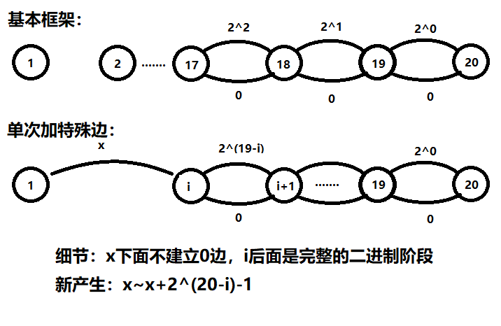

发现自己经常打比赛挂机……正好在noip前练习一下思维题
upd：现在已经变成做过的ARC合集了，码风不定实力不定请见谅
ARC103
ARC103D Robot Arms
题意：
确定小于等于40个步长，长度自己定，但要应对所有询问
满足n个询问（1000内），通过上下左右能到达不同的n个位置，并输出具体方案
大致思路是二进制拆分，但本题的难点就在于只能上下左右，不能不走
比赛的时候想过，如果放大限制行不行？
例如把每个位置拆开成2个、3个乃至4个，但好像都不行
比赛就只打了个暴力部分分
正解看起来很暴力，晚上对着yww大爷的代码看半天全机房都不会证明……
就是从大到小，然后看x和y哪个绝对值大，然后就“gao”，最后再移动多几步
第二天早上过来，忽然就大致理解了
这道题的特殊性就在于1和-1的运用，也就是说虽然不能都不走，但是可以对二进制做差
而二进制有这许多非常奇妙的性质，比如说后面的t个二进制之和+1是等于t+1个二进制
所以如果我们直接把x搞定了，剩下的部分做和、差总是能得出y的（因为最大拼出int，而x+y小于int）
ARC103E - Tr/ee
题意：构造题，给出一个01串，位置i表示能否通过去除某条边得到大小为i的连通块
显然位置1一定是1，位置n一定是0
然后它还必须具有对称性
构造的话我想着可能应该从链开始考虑，然后像样例那样构造出一个大小合法的子树
但随后我就不知道如何保证一定不会出现某个大小了
正解：从大到小枚举，如果不可行就作为单个节点挂在根节点那里（反正大小为1一定会产生）
否则搞一个大小为i的子树，递归下去
ARC103F Distance Sums
题意：构造一棵树，给出对于每个节点，其他节点到它的距离之和
按照d排序，d最小的一定是树的重心
那么考虑d最大的节点，同理，它一定是叶子节点，否则存在比它更大的d
那么每次取出最大的d，它的子树确定，同时它的父亲也是能够确定的（ $d[fa]=d[x]-n+2 \times siz[x]$ ）
最后还必须要跑一次dfs验证，因为此时只能说相对大小是正确的
ARC102
ARC102D All Your Paths are Different Lengths
首先明确，基本的结构一定是二进制拆分
但不难发现，很难保证只有L条路径，得出来的长度还绝对不能重复
其实我有点思维僵化了
如果把1和后面的东西拆开来，分开讨论，后面的全部都是完全的二进制
（也就是2的次幂边，以及0）

那么我们记录一个当前已经搞定的最大范围mx-1，从mx开始
然后对L二进制拆分，然后假如加入之后，依然在合法范围内，那么就加上mx，并更新范围
不难发现，现在得出来的路径长度，一定不会重复出现（通过简单地记录一个当前上界）
ARC102E Stop. Otherwise
考虑对每个询问回答，设当前ban掉的是m；求出有a对$(i,m-i)$以及b个随便用的数；如果有$2i=m，c=1$，这个特判即可
$F(n,x,y)$表示将n分成x个非空组合+y个可空组的方案，转化为将n+y分成x+y个非空组的方案，插板法即$F(n,x,y)=C_{n+y-1}^{x+y-1}$
方法一，$O(n+k^2)$：code
那么枚举a中用了i个，$ans=\sum_{i=0}^a C_a^i2^i F(n,i,b)$，不是所有人能想到这个是因为有的人只知道x=0或y=0
方法二，$O(nklogn)$：
考虑生成函数算a的贡献，即$预处理好pp_a=(\frac{2}{1-x}-1)^a,ans=\sum_{i=0}^n [x^i]pp_a F(n-i,0,b)$
下面这两个做法我已经不知道怎么直接推了，可能需要问高一的我吧
方法三：$ans=\sum_{k=0}^{a} (-1)^k 2^{k} C_{a}^k F(n,0,b+k) $
方法四：$ans=\sum_{k=0}^{a} 2^{k} C_{a}^k F(n-k,0,b+k) $
ARC102F Revenge of BBuBBBlesort!
当时不知为何没写题解，code
ARC101
ARC101D median of medians
二分答案mid，考虑有多少个区间的中位数$\ge mid$，经典做法设$\ge mid$的为1，其他为-1，那么就是有多少个区间的和非负
简单树状数组即可，$O(nlog^2n)$，code
ARC101E Ribbons on Tree
题意：给定一棵点数为偶数的树，求有多少种将点两两配对的方案使得每一条边至少被一对匹配点之间的路径覆盖
容斥：设边集T为必定不经过的边，则答案即 $\sum (-1)^{|T|} F(T)$
显然大小为t的连通块，任意选择的方案数 $g(t)=(t-1)(t-3)(t-5)… \times 1=(t-1)^{‘’}$
具体的奇偶性等细节自行处理
如果T把树分成了多个连通块，则答案即每个块的g(t)的乘积
然而指数级枚举T显然是不现实的
利用图是一棵树的特性，考虑树形dp
设 $f(x,k)$ 表示在x的子树中，最顶上的连通块的大小为k
这个连通块是可拓展的，所以不统计内部的方案数，直到被其父亲统计（被父亲断开）
dp转移时，常规地枚举两次siz，然后复杂度也同样是套路：
把siz看做子树的每个节点，则每个点对只会在lca处被遍历到，所以复杂度 $O(n^2)$
转移方程的话，因为边集大小增加，
如果不断开，相当于合并上面那个块， $f(x,sz1+sz2)+=f(x,sz1) \times f(y,sz2)$
如果断开(x,y)， $f(x,sz1)+=(-1) \times f(x,sz1) \times f(y,sz2) \times g(sz2)$
ARC101F Robots and Exits
用二维平面理解可能比较好懂？一开始想的时候没看做一个平面，结果没法意识到有用状态仅n个
显然把只有右边、左边、已经在洞上的那些去掉，然后每个机器人只关心他左边和右边的第一个，设距离二元组为$(a_i,b_i)$，放到二维平面上；然后当前的状态就是(x,y)即历史向左或向右最值，每次给x+1或y+1，也就是形成了一个折线
一个机器人掉了即$x=a_i或y=b_i$即碰到一条竖线或一条横线的时候确实在哪里掉落，那么你发现从左边掉的等价于在折线左上方， 从右边掉等价于在折线右下方，问题转化成求多少个下方的点集不同的折线
关键状态仅n个，设f表示第i个点为最后一个下方关键点且下步往右：$f_i=1+\sum_{x_j<x_i,y_j<y_i}f_j$，直接树状数组维护即可，$O(nlogn)$
ARC100
ARC100D Equal Cut
逻辑上讲，不妨换个切入点，考虑枚举中间的断点2
先只考虑左边
①最大值在左边 那么缩短A和B的差，会更优
②最小值在左边 同上
③A和B都不是最大值或最小值，那么缩短A和B的差，不会让答案更差
上述情况都不是绝对的，可能移动时变成了另外一种情况
但做法都是相同的，就是在平均值旁边“摇摆”
那具体怎么实现？如果直接二分查找也没问题，
不过因为断点1和断点3都是递增的，所以可以“暴力”地移动却能达到O(n)的复杂度
ARC100E Or Plus Max
题意：给定一个正整数 n(n≤18)
然后给定一行共 $2^n$ 个正整数 a0,a1,⋯,a2n−1
对于每一个 k( $1≤k<2^n$ )，输出满足 i OR j≤k 的最大 ai+aj 值。
我能想到的最好的做法：
如果能得出 $i|j=k$ 的情况，那么前缀max就是答案
然而很难算出来
但如果能得出 $i|j \in k$ 的答案，那么前缀max也是可以的
而这个显然好算很多，i和j基本没关系了
枚举每个k，然后枚举其子集，维护最大和次大
时间复杂度： $O(3^n)$
|
|
然而4亿在atcoder上面居然只需要760ms
正解：
既然我们的答案和具体子集没有关系，只关心其最大值和次大值
可以不用枚举子集，而是用子集来更新父亲
对于一个集T，不一定所有的子集都直接更新到T，也可能先经过T的子集，但这样一定不会漏
时间复杂度降低到了 $O(n2^n)$
据说这个技巧有个更深入的应用：Fast Zeta Transform
ARC100F - Colorful Sequences
题意：定义一个长度为n，字符集大小为k的序列是好的，
当且仅当其中存在一个长度为k的子串满足1到k每个数在这里面恰好出现一次。
现在给一个长度为m的序列a，问在所有好的序列里面，a作为子串的出现次数的和。
感觉这道题好神仙啊，还好有我p老大教我这个菜逼
先思考简化的问题
一、问题一
只考虑出现的次数，不考虑序列的好坏
因为互相之间没有影响，直接搞
枚举左边的数量，乱填， $(n-m+1) k^{n-m}$
二、问题二
考虑all-不好的
那么问题转化为染色，最近在noiac做的一道比赛题（题解自行搜索）
$f(n,ln)=f(n-1,ln-1) \times (k-(ln-1)) + \sum f(n-1,ln<t \leq k)$
此处复杂度为nk
三、问题一 + 问题二
A. 串a中包含k个不相同的
直接按照问题一计算即可
B. 串a中包含最长不相同，长度小于k，前后延伸最长不重叠
同样是计算不合法的数量，左右两边以刚才得到的延伸作为强制起点，按照问题二一样向左右分别dp
然后和问题一一样，枚举左边，只不过此时左右两边填写的数量不是乱填，而是要保证非法性
C. 串a整体都是互不重复，但长度小于k
我们既要求非法，有要统计贡献
因为串a本身是互不相同的，不能像B那样左右搞，因为互相影响
这里用到一个非常巧妙的转化
先忽略串a的具体字母，统计所有非法串中，长度为m的互不相同字符串的贡献
这样以后我们就不再关心串a的具体值了，反正互不相同且唯一就是了
最后把贡献还原回去，可以通过除以 排列数P(m,k) 实现
贡献的计算可以仿照前面的dp方式
设f表示串总数，当后缀不可延伸长度满足长度条件的时候就统计进g，然后g自己也转移
ARC099
ARC099E Independence
题意：
给定一个有 n 个节点， m条边的无向图，保证没有自环和重边。
请你把所有的 n 个节点分成两组，同组中的任意两个节点之间都有边直接连接。
问连接同组节点的总边数最小为多少？如果不存在合法的划分方案，则输出 −1
我能想到的最好做法：
题目要求分成两个团，取补图后就是分成两个独立集
那么这个可以二分图染色，因为边意味着排斥关系
然后我们需要最小化 $min{ \frac{a(a-1)+b(b-1)}{2} }$
因为染色的时候我们会先入为主，那其实是可以整体取反的，也就是交换a和b
ARC099F Eating Symbols Hard
明显会想到hash，记录状态(当前hash值、当前指针对应的base次幂值)，比较只用前面，合并是可以快速搞的
然后我的写法是$O(hash个数*nlogn)$的，code
ARC098
ARC098D Xor Sum 2
题意：给你一个长度为n的整数序列，让你求出满足以下条件的(l, r)的对数：其异或和=其和
能想到的最好做法：
维护一个前缀异或和a，前缀和b
$a[r]^a[l-1]=b[r]-b[l-1]$
然而异或没法和四则运算一起化式子，复杂度只能是 $O(n^2)$
正解：
刚问出来就被秒掉了
$0 xor 0=0,0+0=0$
$0 xor 1=1,0+1=1$
$1 xor 1=0,1+1=2$
唯一的差异就是进位
而这个差异是没有办法消除的，只能避免
所以该区间一定不会在同一个位置上存在超过一个1
所以具有单调性
ARC099E Range Minimum Queries
题意：
给定一个n个数的数列和两个整数数K,Q，执行Q次操作：选择一段长度为K的区间，删除其中的最小值。
问：执行Q次操作后，被删除的数的最小值和最大值之差 的最小值是多少？
max-min的最小值显得很复杂
但因为取得都是原本就有的数，所以可以枚举min，然后找最小的max
因为min确定了，那么不能有任何区间包含小于min的数，这些数把整个区间分成很多段
对于每个长度为len的段，只能取出前面len-k小的数
把每个段能贡献的所有数排序，其中第q小的就是答案
ARC098F Donation
一个点如果被经过多次，在最后那次再解救总是等效且更优的
考虑构造一个序列 $C_i=max(A_i-B_i,0)$ 表示在这个点上的任意时刻都至少有的金币数
那么我们考虑当前C最大的点x，去掉后会形成多个连通块，那么策略一定是走完其他连通块->x->某个连通块
于是我们可以把图转化成一棵树，重复上述操作，即儿子为各个连通块中最大点，这个可以nlogn解决
设 $f_x表示子树B的和，g_x表示搞定子树，进入前最少的金币数$
$g_x=min { max(g_y,C_x)+f_x-f_y }$
ARC097
ARC097D Equals
题意：给出可交换的两个位置，和一个排列，最大化pi=i的位置
这都没想出来……
对于能间接互相交换的位置，假设有a要和b交换，则总是能够a到b，
此时b被挤开，跳到a，然后中间的部分不会发生改变
所以，可以用并查集维护间接到达关系，然后询问能够回到原本位置即可
ARC097E Sorted and Sorted
题意：排成一列的2N个球，有黑球和白球，黑球和白球上面都写了1-N的数字，给定一个操作：swap相邻两个球。问最少操作次数使得白球和黑球上的序号都分别递增
从简单问题入手，如果给出一个n的排列，要让a[i]=i，只能相邻交换
此时因为每次交换只能消除一个逆序对，所以答案是逆序对数
此时所谓逆序对即原位置p1，终位置p2， $p1[i]>p1[j]且p2[i]<p2[j]$
那么回到本题，求出一个最优秀的终止状态p2，就能得出答案了
那么，白球和黑球内部要有序，但交错的顺序不确定
即使暴力也不好枚举，但因为黑白内部的顺序已经确定，不难想到可以用类似字符串匹配的方式dp
设 $f(x \leq 2n,a,b)$ 表示填写到第x位，白色填了a个，黑色填了b个的逆序对最少个数
显然i=a+b，实现的时候需要去除一维
转移的话，关键就是要快速地计算新逆序对
设白色的id为x，则对应黑色的id为n+x
当放白色， $p1[t]>p1[a]，t=1 \to a-1和n+1 \to n+b$
当放黑色， $p1[t]>p1[n+b]，t=1 \to a和n+1 \to n+b-1$
这个东西可以预处理一下，然后就能达到 $O(n^2)$
ARC097F Monochrome Cat
题意：给定一棵有$n \le 1e5$个节点的树，每个点有0/1，可以从任意节点开始，任意一个节点结束。
可以执行如下两种操作之一：
- 移动到相邻节点，并改变其颜色
- 改变当前节点颜色
求把所有节点染成0所需的最少操作次数
当时居然不会做
对于这棵无根树，显然可以不断将0的叶子删除，于是所有叶子都是1
如果从某点出发并回到自己，显然代价是$\sum deg+\sum_{非叶} [deg_i\&1 \ne col_i]$，先把这个求出
如果改成从a开始b结束（显然a和b都是叶子不会劣），则减少量为：
$-1+dis(a,b)+\sum_{a到b非叶} [deg_i\&1 \ne col_i]-\sum_{a到b非叶} [(deg_i-1)\&1 \ne col_i]=-2+\sum [是叶子]+[不是叶子且deg_i\&1 \ne col_i]*2$
于是直接带权直径即可，code（输出答案那里注释忘删了不用管）
ARC096
ARC096D Static Sushi
把前面的信息记录一下，然后后面就简单地取mx就好了
ARC096E Everything on It
题意：
拉面有 n 种配料，每种配料可以选择加入到拉面中，也可以不加入；一共 $2^n$ 种组合，有人来订购一些拉面（不能空集，也就是元素为子集的集合，显然拉面最多同时有$2^n-1$碗）
要求：每种拉面配料不能相同，每种配料在全部的面中至少出现过两次。
这道题一眼容斥来搞「不能出现少于两次」的这个条件
$ANS=\sum_{k=0}^n (-1)^k C(n,k) f(k)$
其中f(k)表示有k个颜色只能不用或用一次，剩下n-k个颜色任意放，但不能出现两个完全相同的组合数
然后到这里我就不知道怎么处理不能完全相同这个问题了
f(k)应该分两部分去思考
① 不合法的k个颜色
那么相当于这k个元素，要么不放，要么放进一个集合中
假设有t个非空集合，那么这个是类似于第二类斯特林数的（刚学……）
递推式： $g(k,t)=g(k-1,t-1)+g(k-1,t) \times (t+1)，0 \leq t \leq k$
解释：在原本第二类斯特林数的基础上，加上「可以丢掉」这个选项
可以是把第k个元素单独放进第t个位置，也可能第t个集合是混合的，再或者丢掉
②其他的n-k个颜色
这里非常巧妙（自己菜），也是我一直不知道怎么解决的地方，方案数量为 $2^{n-k}$
那么对于那k个非法元素，本来觉得超级复杂，其实因为每个最多出现一次，不同的碗一定不会重复，所以是 $2^{(n-k)t}$
而合法元素的话，不应该和碗的数量扯上关系，而是考虑把每个方案看作一个碗，考虑这个碗是否出现，所以是 $2^{2^{n-k}}$
综上所述， $f(k)=\sum_{t=0}^k g(k,t) \times 2^{(n-k)t} \times 2^{2^{n-k}}$
套一个小费马定理即可
ARC096F Sweet Alchemy
题意：n≤50的树，每个点有权值，现要选点（可多次选一个点）使点数尽量多，如下限制：
选的总权值不超过C≤1e9；
ci表示i选的次数，pi表示i的父亲，那么cpi≤ci≤cpi+D，D≤1e9是给定常数。
因为子节点选择的数量至少比父节点多
可以把操作看做是选择一整棵子树，那么问题转化成：
有n个物品，有体积和价值，要求在体积小于X的条件下让价值最大化，
每个物品也有选择次数的限制（根节点无限，其他节点为D）
观察值域，物品的数量很小，体积很大，单个价值很小，次数很大
直接用多重背包的模板，无法存下体积，用价值dp的话，总价值可能也会很大（因为次数大）
此时有一个很不好想到的姿势：用贪心代替大部分dp
结论：每个物品，只用前面n个去dp，其他的贪心
该贪心主要用微扰（应该是吧？）来证明：
当物品数量足够大的时候，如果不考虑小的误差，
是可以用贪心，选择性价比高的物品来得到大致结果的
为什么只能是大致呢？主要可能是部分细小的体积有优化空间
思考什么情况下，选择性价比高的物品一定是正确的
设有物品i和j， 并假设i的性价比更高即 $v_i / w_i > v_j / w_j$
选择vi个j物品，和选择vj个i物品，其价值都是 $v_i \times v_j$
但体积 $w_j \times v_i > w_i \times v_j$ 也就是说选择i的体积更小
这就是说，当达到此数量级，一定是性价比高的更优秀
那么，在这个数量级之外的次数可以用贪心计算，内部的情况因为比较复杂，不能贪心，只能dp
那么注意到w在单个的时候，和n是同阶的，也就是dp的权值是 $n^3$ 级别的，而体积依然非常大
所以应该用权值来dp，即 $f[权值]=min 体积$
考虑到用二进制拆分法处理多重dp，值域为 $n^3$ ，时间复杂度为 $O(n^4logn)$
dp完成后，剩余的空间就贪心地在剩余物品中选择即可
up：忘记了，用单调队列优化一下就到n四方了……
ARC093
ARC093D Grid Components
给出正整数A和B，求一个长宽都在100以内，并且白色连通块和黑色连通块分别是A和B的矩阵
保证有解，输出任意一个合法解即可
首先，h=100，w=100
然后分均匀的两边，然后A–,B–
然后再黑色那边补白色，白色那边补黑色，只要隔一行就好，
这样正在补的连通块只增不减，另一个颜色完全不变！
code
ARC093F Dark Horse
难得能独立做出arc的F
这题的复杂度是 $O(mn2^n)$，不过我的代码因偷懒写的是$O(m^2m2^n)$，写成那种的话就是把下面第一维状态去掉，转移的时候直接把-1这个系数带上
首先考虑这是一棵二叉树，那么我们不妨把1放在0号位置，最后乘$2^n$，然后1向上的链上会有n次与别人交汇（即n次分叉
考虑容斥，在A中固定cnt个人与1在那n个位置交汇，系数就是经典的$(-1)^{cnt}$
考虑每个固定非法的人，他要在n个位置中选一个且以后其他人不能再用，明显可以状压
设这个人$a_i$选择的是位置j（从0编号非常方便，代码极短，且其实第一维可以去掉的），那么要在比自己大的、还没用的人中选择$2^j-1$个，乘以排列$j!$；为了方便计算「比自己大的且没用过」的，从大到小考虑a即可；最后还要把没用过的人乘个阶乘即$(2^n-1-State)!$
ARC092
ARC092D Two Sequences
这道题还是很有意思的
首先呢，直接枚举显然是不行的
那么找找特殊性质
异或，当然就跟奇偶性有关了
然后？嗯我比赛的时候就是想到这里就不会了
这个复杂度看起来就像是nlogn
我们先按照位来处理。
但a+b这种东西很烦啊，因为会有进位
不过至少，我们处理第i位的时候i前面的就不用考虑了，%掉就好
然后，我们统计第i位是1的数量，判断奇偶性就好了。
显然我们可以得到一个结果的有效范围
$$
[2^i,2^{i+1}-1] （不进位）
$$
和
$$
[2^{i+1}+2^i,2^{i+2}-1] （进位）
$$
那么枚举n个数字作为加数，不就得到了另一个加数的有效范围了吗
nlogn排序后二分查找就好了（事实证明我的查找还是打得不熟练）
假设第j个数字的对应数量有tj个，那么答案就是
$$
ANS=\sum_{i=0}^{29} ( ( (\sum_{j=1}^{n} tj) \& 1)<<i )
$$
好久没有给卡常了……
总时间$O(nlog^2n)$
ARC092F Two Faced Edges
题意：给出$n \le 1e3$点$m \le 2e5$边简单有向图，对每条边回答翻转这条边方向后scc个数是否变化
对于边 $(x \to y)$考虑不变化的条件：
如果是scc内部的边，不变化要求「不用这条边也能从x到y」；
如果是外部的边，「要求不能有别的边连接这两个scc」
当然其实可以不求scc，因为已经有$x \to y$这条边了，根据「能从y到x」就能判断了
综上所述，当且仅当「不用这条边也能从x到y」=「能从y到x」时不会变化
后面那个随便求，前面那个考虑枚举每个x，对于边表，从前往后和从后往前遍历dfs一次，即可判断这个y是否必须用这条边才能到达，$O(nm)$
ARC074
ARC074E RGB Sequence
此题可做$O(n^2)$，详见coj
ARC074F Lotus Leaves
题意：给出一个$n*m$的表格，o表示可以去的地方，每次像象棋里车一样移动，问最少需要ban掉多少点使其没法从S到T，无解-1，$n,m \le 100$
表格图尝试行和列做成二分图，那么就是删掉多少条边使得某两条边不连通，其实$(stx,sty) \to (edx,edy)$可以看做从stx或sty出发，到达edx或edy，直接最小割，$点数=O(n),边数=O(n^2)$，code
ARC073
ARC073E Ball Coloring
题意：给出$n \le 2e5$个二元组，每组分配左右后，最小化左元素极差与右元素极差的乘积
对于全局最小和最大都在左边的情况，只需要一个线性的2-point确保覆盖了所有二元组， 先判掉（这里写的时候脑抽了上了个set，其实只关心合法二元组的数量，可以线性）
钦定全局最小在左侧，全局最大在右侧，那么就是最小化左侧最大值，最大化右侧最小值。发现这两个东西不冲突，直接让每个二元组较小的放左侧较大放右侧即可。
事实上还有种写法不用像我代码那样稍作特判（虽然写完就过），就是按较小值递增排序二元组，枚举最小值i（一定由某个二元组的较小值贡献否则没意义），后面的二元组显然应该选较小值，前面的二元组只能选较大值
luogu题解区还有一些随机的nb老哥
ARC073F Many Moves
题意：一行$n \le 2e5$个格子，两枚棋子一开始在A和B，按顺序处理q次操作，每次给出某个位置，要选一个棋子移动到那里，移动代价为移动距离，最小化总代价
随便写出一个$O(n^2)$的dp：$f_{i,j} \le f_{i-1,j}+|x_{i-1}-x_i|,f_{i,i-1} \le f_{i-1,j}+|x_j-x_i|$
直接线段树优化转移即可
ARC071
ARC071F Infinite Sequence
见过最水的F
|
|
ARC068
ARC068F Solitaire
题意：统计排列P，给定1所在位置k，要求存在方案，i=1到n将$i$放到一个空序列的前面或后面，然后每次取走空序列的前面或后面，能得到排列P，$k \le n \le 2e3$
做这题时看了很多篇题解都是一脸懵逼，现在感觉很多篇都没有讲到点子上，我都不知道讲dp不讲转移条件又没说清楚的人是怎么想的
首先中间生成那个序列一定是：一段下降+1+一段上升
因此得知P有以下条件：$P_k=1$、前k-1个的下标可以分为两个集合使得下标对应元素是两个递减序列A和B、$\min(B)>\max(后面n-k个)$
如果确定了前k-1个，后面的方案数显然是$2^{(n-1)-k}$
问题就是第二个条件，对于一个确定的序列，很容易想到合法性的判定：维护两个序列，如果都能放，就贪心放进上一个最小的那个序列中。但这样不好dp，然后题解给出的判定方法：每次比A小就放A，否则（即比A末尾大）放入B的必须是当前未放中最大的
能这样搞的序列一定都是满足三个条件的合法序列，这没有异议，但我一直没懂为什么所有合法序列都能被这样分
其实就一个小小的观察，每次都能选的时候，我选择放了A，这样始终会保证A末尾小于B末尾，所以其实区别就在于并不需要A和B的结尾具体是什么
想通了这点就很容易了，$dp(i,j)=放了前i个，A末尾是j$，比A小就是$dp(i,j)+=dp(i-1,k>j)$，大的话就是$dp(i,j)+=dp(i-1,j)*[ (n-j+1)>(i-1) ]$（因为前面的i-1个一定都不小于j），后缀和优化转移就是$O(n^2)$
|
|
ARC063
ARC063E Integers on a Tree
维护一个有效的范围和奇偶性，树形dp即可
code